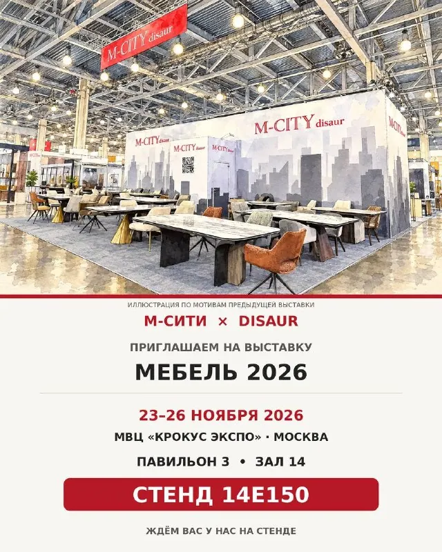
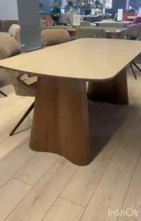
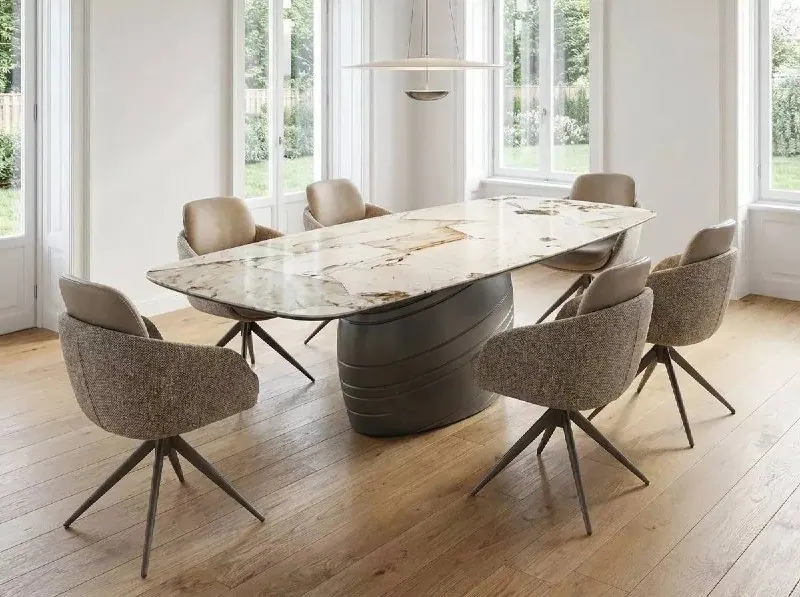

M-CITY Столы и стулья

МЕБЕЛЬ-2026 · РОССИЯ · Стенд 14E150
Дата среза карточки: 16.11.2026 11:21
Посмотреть официальную схему →
Обеденные столы и стулья М-СИТИ и DISAUR: керамические, стеклянные и раскладные модели. Каталог, цены, подбор мебели и доставка по Москве и России.
Официальный каталог подтверждает название компании, страну и стенд. Сайт и открытые контакты добавлены только при наличии строки в официальном путеводителе и успешной проверке сайта. Отсутствие контакта в карточке не означает, что у компании его нет.

M-CITY Столы и стулья
✨ СКИДКИ НА СТОЛЫ И СТУЛЬЯ Столы • Оригами — 10% • Шерл — 10% • Богарт — 10% • Вальдемар KL-188 — 15% • Один — 30% Стулья • Непал — все модели: 10% • Форт NS13 — 30% • Дилл Н-09 на чёрном…
 Видео в Telegram ↗
Видео в Telegram ↗
💫 ДЖУЛИУС и СЕЛЕРИ — сочетание, в котором всё совпало 🤎 ✨ Белая мраморная керамика освежает интерьер, а тёплый оттенок ореха объединяет стол и стулья в цельную обеденную группу. ✨ Мягкие полукресла СЕЛЕРИ с удобными подлокотниками добавляют уюта — за таким столом хочется собираться не…
 Видео в Telegram ↗
Видео в Telegram ↗
СЕЛЕРИ — не просто стул, а настоящее обеденное полукресло. Просторное мягкое сиденье, плавная спинка и удобные подлокотники — в нём хочется задержаться за столом подольше. Плотный меланжевый шенилл красиво сочетается с металлическими ножками под натуральный орех. Доступен в бежевом, сером и коричневом цветах. Посмотреть полукресло…
 Видео в Telegram ↗
Видео в Telegram ↗
ПАТРЕС — тот случай, когда стул выглядит уютно, но не занимает половину комнаты. Мягкое сиденье, удобная поддержка спины и плотный меланжевый шенилл делают его комфортным для долгих семейных ужинов. Металлические ножки с отделкой под орех добавляют интерьеру тепла. Три спокойных оттенка: бежевый, серый и коричневый.…

Видео в Telegram ↗Новинка уже на складе — стол РЕМУС 🤎 Тёплый травертин, основание в шпоне ореха и красивый, спокойный дизайн. Размер 180×90 см — удобно для большой семьи и просторной кухни-гостиной. Стол нераскладной, столешница — керамика на шпонированном МДФ. Посмотреть стол РЕМУС на сайте M-CITY Столы и…

ОАЗИС возвращается — теперь уже не на выставочный стенд, а на наш склад. Впервые мы показали эту модель весной на выставке UMIDS в Краснодаре. И ОАЗИС сделал именно то, что должен делать хороший стол: собрал вокруг себя людей. В нём нет показной роскоши. Его красота…

ЛАВА скоро на складе. Весной мы впервые привезли этот стол на выставку в Краснодаре — и он не остался незамеченным. Возле него останавливались, рассматривали основание, проводили рукой по керамике и спрашивали: «Когда можно будет заказать?» Скоро — уже можно. У ЛАВЫ редкое сочетание: стол выглядит…

Некоторые столы нравятся по фотографиям. А некоторые собирают вокруг себя людей ещё на выставке. Именно так произошло со столами ЛАВА и ОАЗИС . Весной мы впервые показали их на мебельной выставке UMIDS в Краснодаре — и обе модели сразу стали одними из самых обсуждаемых на…
 Альбом · 3
Альбом · 3
🚚 Большие столы уже в пути — и это действительно большие столы. К концу августа ждём на складе две эффектные модели DISAUR ® : 🔸 ТЕРРА — 240 × 120 см , раскладывается до впечатляющих 360 см https://mebelcity.com/catalog/stoly/keramicheskie_stoly/64816/ 🔸 ВЕНТО — 280 × 120 см…
Источники: